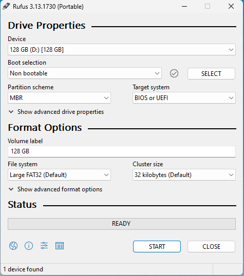

Nintendo DS Homebrew Setup

I bought a Nintendo DS Lite on ebay for some future projects and wanted to be able to compile and run my own programs on it. The following is a rough recounting of the process.
Hardware⌗
From a hardware perspective, the only other things I needed were:
- “R4” Flashcard: https://www.amazon.com/dp/B098T6VMYQ
- SanDisk 128 GB Micro SD card: https://www.amazon.com/dp/B0B7NTY2S6
(Not affiliate links)
Kernel/Launcher⌗
To prep the SD card, I formatted it with Rufus using the following settings:

The important bits here are:
- Boot selection: Non bootable
- File system: Large FAT32
With that done, I needed to download a kernel. The kernel acts as a launcher - it allows you to browse the files on the SD card (or a slot-2 cartridge) and select which one to run.
The kernel I used is “Ace3DS+ Wood R4 v1.62”. You can find more information on The Flashcarts Wiki, but here’s a direct download link: https://flashcard-archive.ds-homebrew.com/Ace3DS+_R4iLS/Ace3DS+_R4iLS_Wood_R4_1.62.zip.
I unzipped the file and copied the contents onto the SD card.
Now, with the SD card in the R4 flashcard and the R4 in the DS, the DS successfully boots into the launcher.
Building a Homebrew DS Game⌗
Setting up a development environment was much easier than I thought it would be, mainly thanks to dev containers.
Note: here’s a great YouTube video that covers the basics of dev containers if you’re unfamiliar (like I was): https://www.youtube.com/watch?v=SDa3v4Quj7Y.
First, let’s talk about prerequisites. I already had VS Code and Docker Desktop installed on my Windows dev machine. I also installed two VS Code extensions: Remote Development and C/C++.
The next step was to create a dev container. Thanks to the video I linked above, I knew to use the “Clone Repository in Container Volume” command to clone an empty repo into a new dev container. I used a basic Debian image because I knew I’d be changing it later.
Now that the container was created, I was able to edit the devcontainer.json config file. I chose to swap out the direct image reference for a reference to a Dockerfile, but that turned out not to be necessary in the end. It should be sufficient to change the image to be the latest version of devkitpro/devkitarm.
<devcontainer.json>
{
"name": "NDS",
"image": "devkitpro/devkitarm:20240511"
}
I’ve yet to mention devkitPro - this is a toolchain and set of libraries that make it easy to write NDS games. They provide a bunch of examples that I referenced to get my project set up correctly.
I copied a Makefile from the example repo, so I made sure to keep my directory layout the same
- project root/
- .devcontainer/
- devcontainer.json
- data/
- source/
- main.cpp
- Makefile
- .devcontainer/
The full repo is available on GitHub: https://github.com/bitwisebones/nds-homebrew-example.
With that all in place, I ran make in the root folder in the container, and the .nds file was successfully built.
The last piece of the puzzle for me was getting the .nds file onto the SD card. Just finding that file (in the dev container’s volume, somewhere in the WSL filesystem) was a pain. The magic path for my Docker Desktop install was:
\\wsl.localhost\docker-desktop-data\data\docker\volumes
And that’s the whole process. I was also able to run the .nds file on an emulator to test changes before I went through the physical process of copying it to the SD card (which can be tedious).